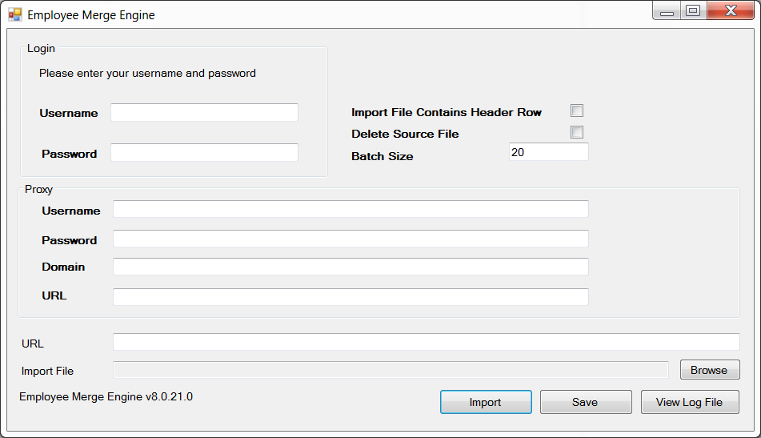

Configuring and Running the Employee Merge Utility
Select Start > All Programs > Cority > Employee Merge Utility > Employee Merge Utility. The Employee Merge Utility form will open.
Complete the Employee Merge Utility form, ensuring you provide a URL and import file path. The fields are described below.

Username: The username you want used for running the Employee Merge Utility.
Password: The user password you want used for running the Employee Merge Utility.
Proxy Username: The username used when connecting to the Web proxy.
Proxy Password: The password used when connecting to the Web proxy. The password is encrypted before being saved to the ini file. The encryption depends on a key that is user/machine specific. This means that one user cannot decrypt the password from an ini file created by another user. This is an important point to keep in mind when configuring the Employee Merge Utility to run automatically/silently.
Proxy Domain: The domain used when connecting to the Web proxy.
Proxy URL: The URL of the Web proxy.
URL: The URL of the web service to be used.
Import File: The filename of a comma-delimited file that contains the employee number pairs you want merged into the Cority application.
Click Import.
Note: If you encounter an error while performing the import, the file may be too large. Try creating smaller files and importing them separately.
Important: If you have automated the import task using a scheduling utility such as Scheduled Tasks (Windows workstations/servers) and have updated the Employee Merge Utility web client from GX2t or earlier to GX2u or later, you must update the Program/Script field of your scheduled task to reference the new executable filename (.exe), because that filename changed.